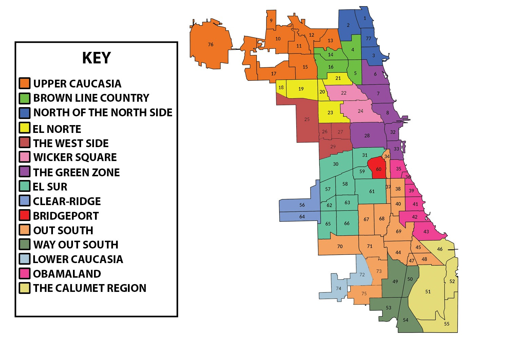

Downtown
Great for shopping, museums, landmarks, and skyline views.

Chicago is made up of many neighborhoods. Each area has its own culture, food, history, and entertainment options.
Great for shopping, museums, landmarks, and skyline views.
Known for museums, parks, history, and the University of Chicago area.
Popular for music, coffee shops, restaurants, and local stores.